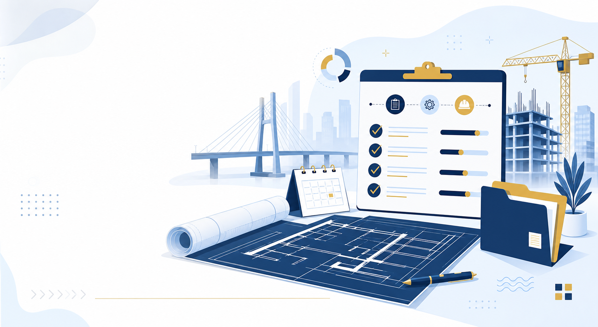
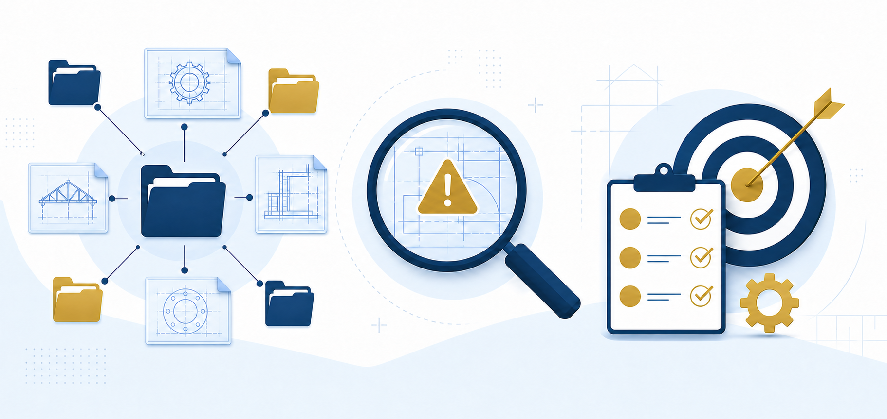
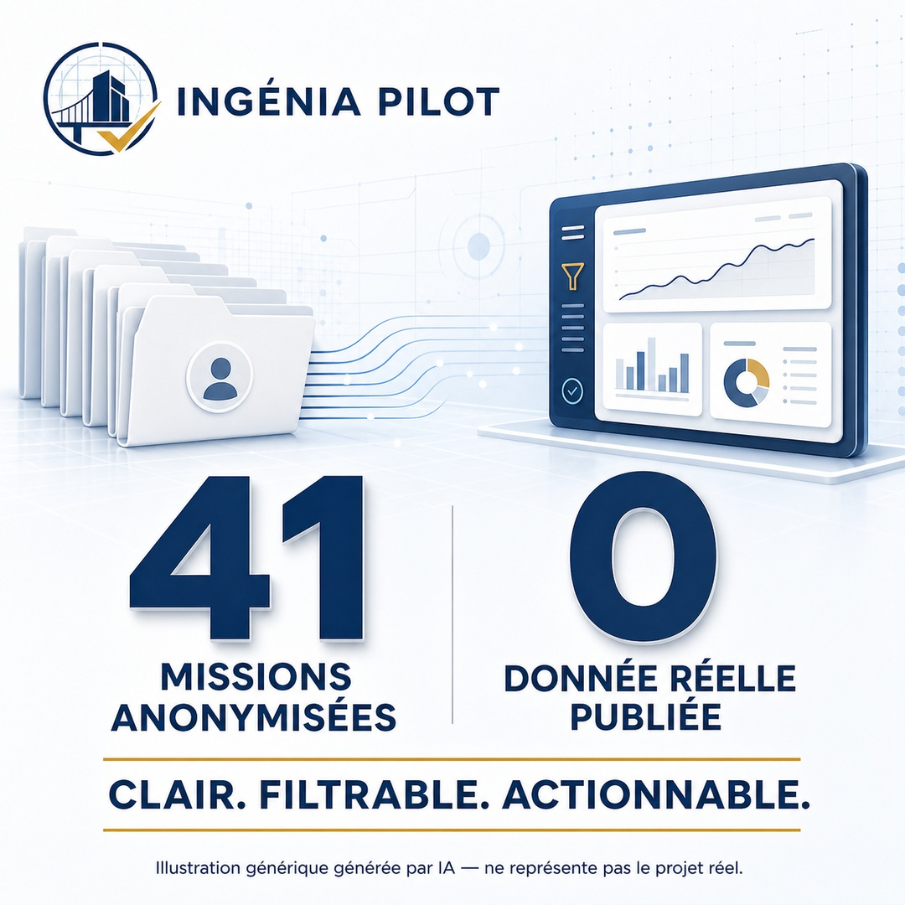
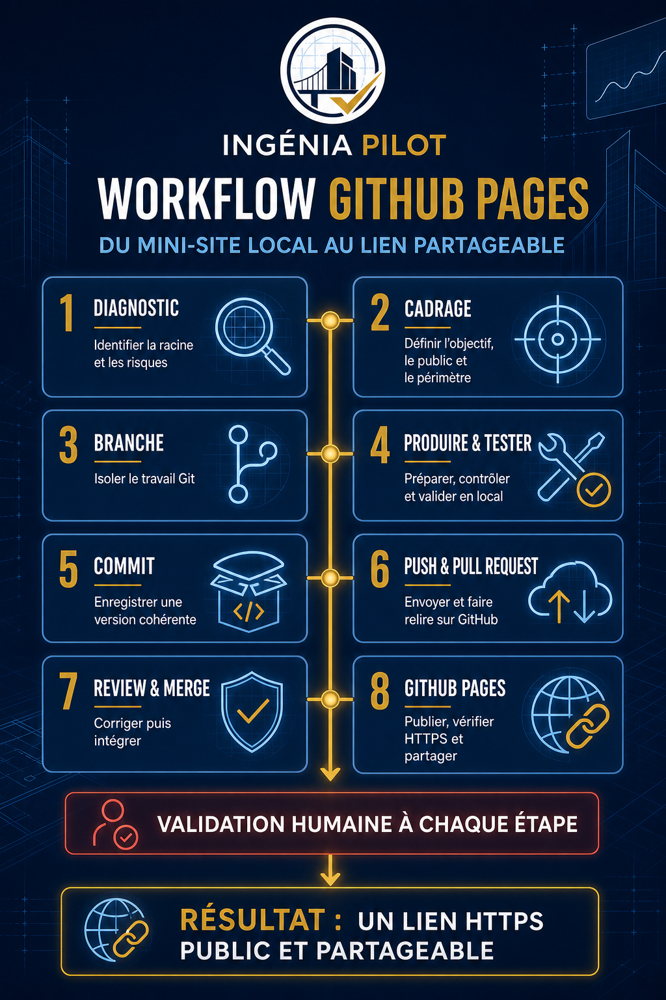
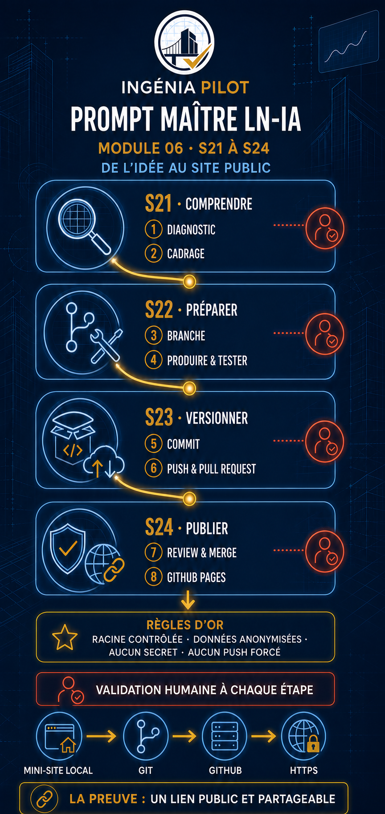
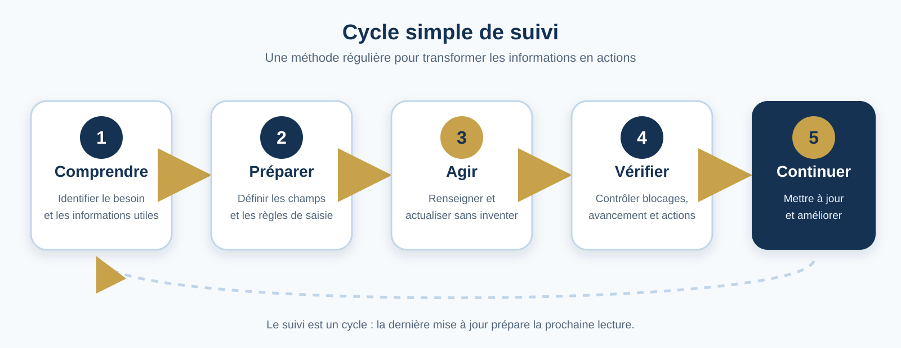
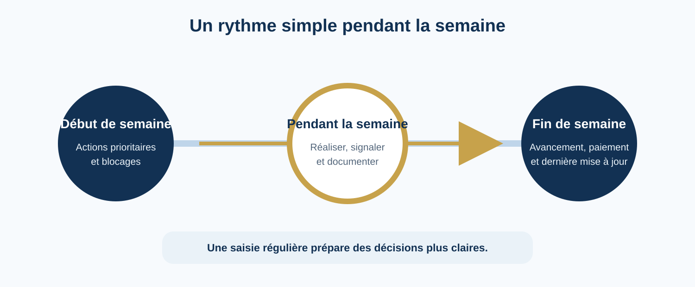
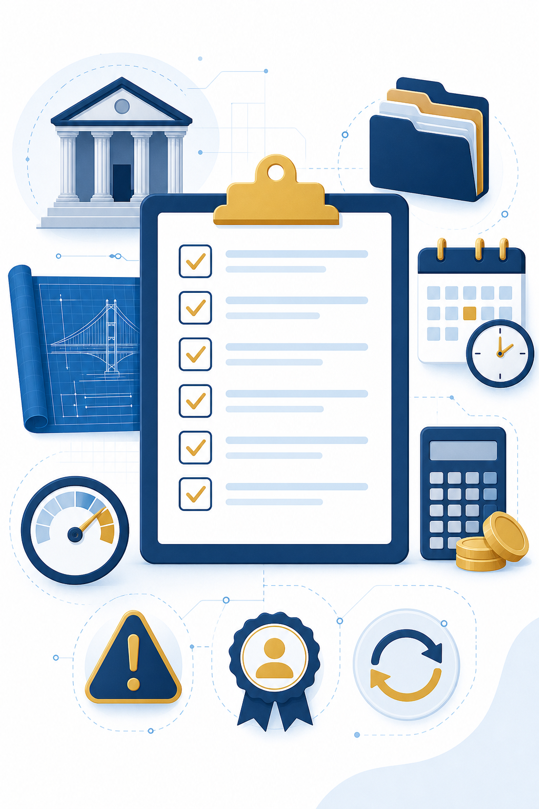
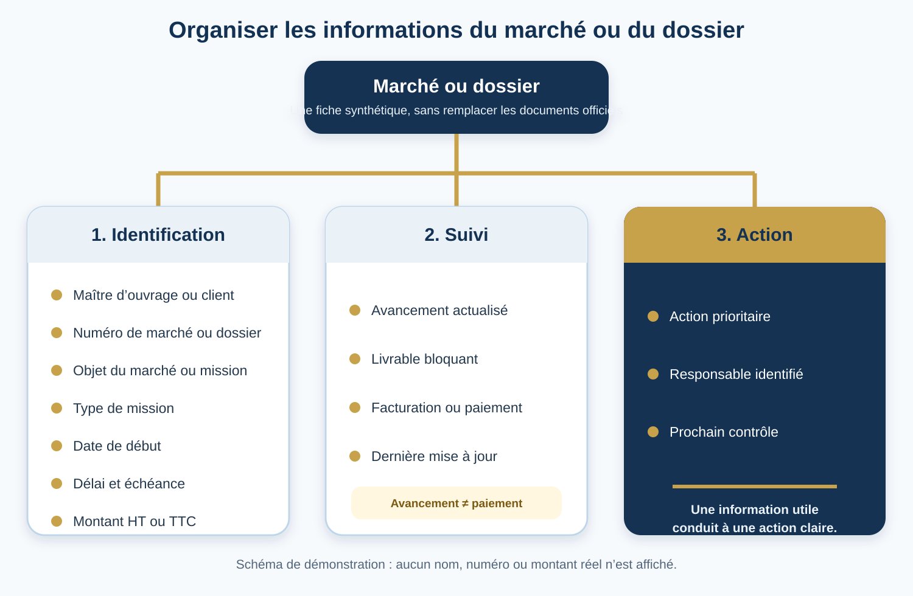

Pilotage des projets d’ingénierie
INGÉNIA PILOT
Une vue claire et partagée des missions en cours
Ce guide interne présente une méthode simple pour identifier chaque marché ou dossier, mettre à jour l’avancement des missions, repérer les blocages et préparer les actions prioritaires avec l’équipe.
Démonstration locale — aucune donnée réelle — aucune publication.

Pourquoi organiser le suivi ?
Sans outil de suivi partagé, certaines informations restent dispersées, les missions incomplètes sont repérées tardivement et les décisions deviennent plus difficiles à préparer. Un tableau structuré permet de voir en une lecture l’identification de la mission, son avancement, les blocages, les responsabilités et les actions à engager.
Le suivi ne remplace pas les dossiers techniques, les contrats, les factures ou les échanges professionnels. Il fournit une vue synthétique pour orienter le travail.
Portefeuille de missions anonymisé (V3)
Cette démonstration couvre l’ensemble des projets recensés dans la synthèse interne, sous des identifiants fictifs. Aucun nom réel de client, numéro de marché, objet précis ou montant réel n’apparaît sur cette page.
| Référence | Client | Type de mission | Échéance | Dernier document | Avancement | Livrable bloquant | État de paiement | Action prioritaire | Responsable | Dernière mise à jour |
|---|
Surveillance du portefeuille
Alertes et blocages
Cette vue signale les missions anonymisées dont le statut public est « À confirmer ». Elle présente uniquement la raison générique du blocage, l’action à réaliser et le responsable générique.
0
Missions à clarifier
Chargement des alertes…
Voir ces missions dans le tableau completDécision rapide
Plan d’action du portefeuille
Cette synthèse regroupe les missions anonymisées par statut et indique les actions prioritaires à engager. Les compteurs sont recalculés automatiquement à partir des données publiques.
Chargement des priorités…
Les 11 informations suivies
Chaque mission est décrite par ces informations, sans donnée réelle affichée ici.
Trois bénéfices pour l’équipe

Supports de communication
Les affiches d’INGÉNIA PILOT
Quatre visuels présentent la promesse, les preuves et deux lectures du workflow de publication sous contrôle humain. Ils sont génériques et ne représentent aucun projet réel.







Transparence : illustrations génériques générées par IA — elles ne représentent pas les projets réels.
Une méthode en cinq étapes
-
Comprendre
Identifier le besoin : disposer d’une vue claire des missions, des blocages et de l’état de leur suivi.
-
Préparer
Définir les champs utiles, les règles de saisie, les personnes autorisées et la fréquence de mise à jour.
-
Agir
Renseigner ou actualiser les informations disponibles sans inventer une donnée manquante.
-
Vérifier
Contrôler les échéances, les blocages, l’avancement, l’état de facturation ou de paiement et les actions prioritaires.
-
Continuer
Mettre à jour régulièrement, archiver les missions terminées et améliorer la méthode lorsque le besoin évolue.

Rythme de suivi proposé
Point de début de semaine
Examiner en priorité les actions à réaliser et les livrables bloquants afin de planifier la semaine.
Point de fin de semaine
Actualiser l’avancement, l’état de facturation ou de paiement et la date de dernière mise à jour.
Responsabilité
L’administratif du bureau effectue la saisie régulière. Le gérant ou la personne autorisée ajuste l’avancement lorsque le travail réel diffère de l’indicateur financier.

Checklist de préparation du point d’équipe
Vérifiez les informations disponibles sans saisir de données confidentielles dans cette démonstration.
Identification du marché ou du dossier
- Le maître d’ouvrage ou client est identifié.
- Le numéro du marché ou du dossier est renseigné.
- L’objet du marché ou de la mission est clairement indiqué.
- Le type de mission est précisé : étude, diagnostic, suivi de chantier ou autre.
- La date de début, le délai contractuel et l’échéance prévue sont vérifiés.
- Le montant est renseigné en précisant s’il est HT ou TTC.
Suivi de la mission
- L’avancement est actualisé.
- Le livrable bloquant est signalé.
- L’état de facturation ou de paiement est vérifié.
- L’action prioritaire est définie.
- Le responsable de l’action est identifié.
- La date de dernière mise à jour est renseignée.


Sécurité et limites de la démonstration
Cette page présente une méthode et des intitulés de champs. Elle n’affiche aucun vrai nom de maître d’ouvrage, numéro de marché, objet confidentiel, montant, état de paiement, contact, lien privé, identifiant ou secret.
La V1 fonctionne localement. Elle n’envoie aucune information, ne contient aucun formulaire de transmission et ne remplace pas le tableau de suivi opérationnel.